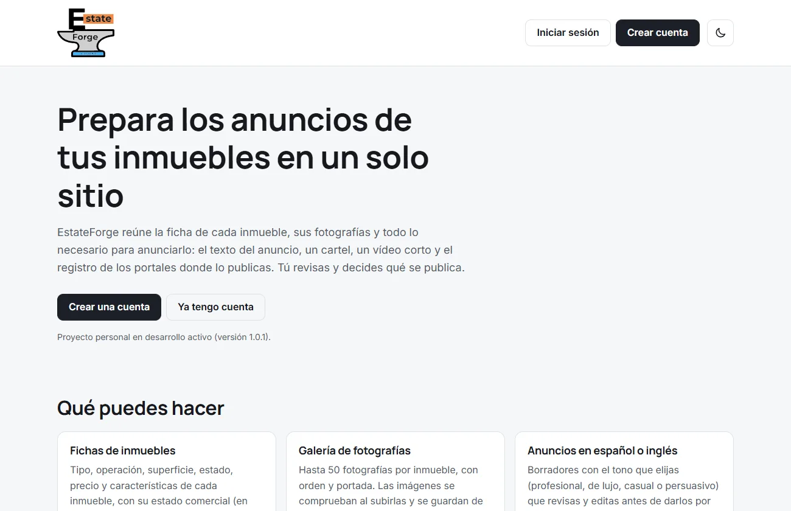
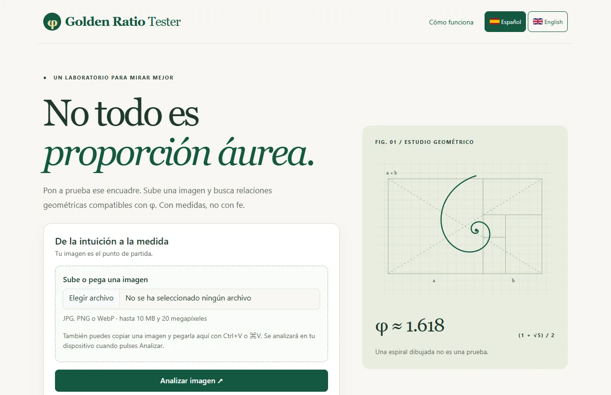
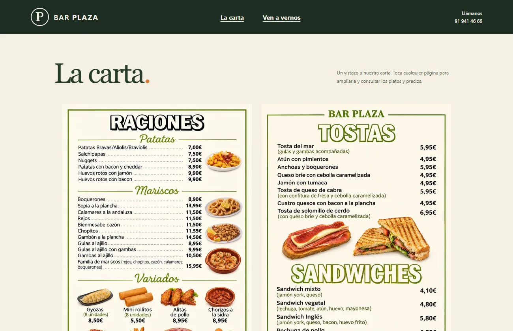
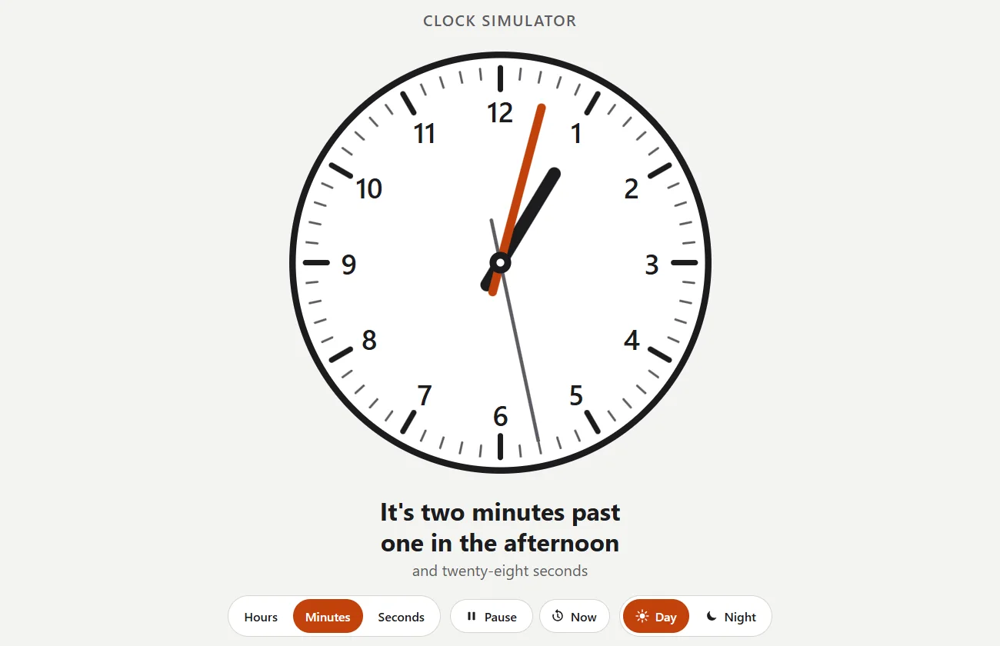
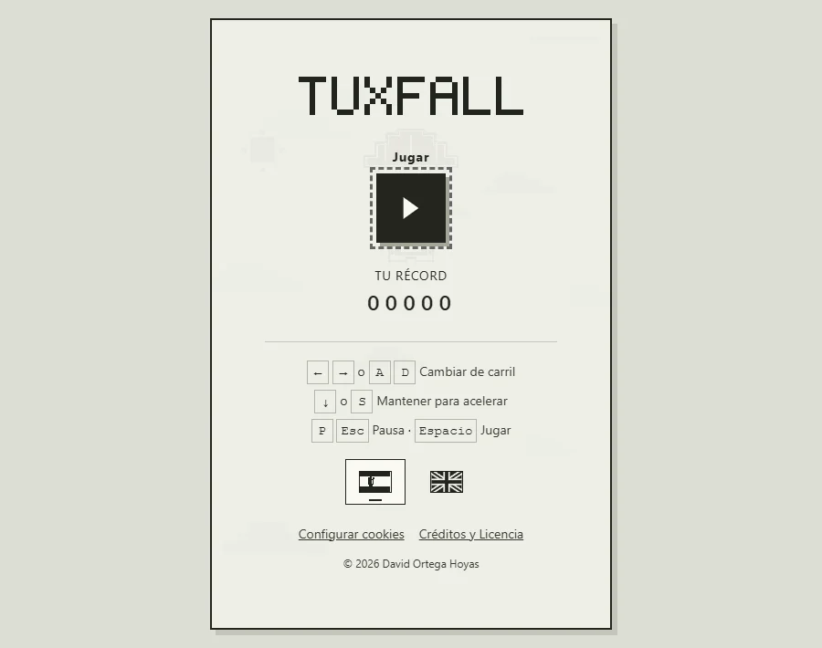

–
Grado Superior en Desarrollo de Aplicaciones Web (DAW)
IES Tierno Galván, Parla. Trabajé con Java, PHP, JavaScript, TypeScript y React, bases de datos SQL y NoSQL, y contenedores Docker.
Desarrollador web Full Stack · Parla (Madrid)
Me gusta convertir tareas de todos los días en herramientas web. En mis prácticas automaticé la gestión de ayudas de Educación. Ahora busco mi primer puesto como desarrollador Full Stack.
Proyectos
Cada proyecto tiene una demo publicada y su repositorio en GitHub.

Caso principal
Una ficha de inmueble reúne fotos, anuncios y material para publicar. Construí la interfaz con React y la API con Fastify. Migré de SQLite a PostgreSQL para controlar las ediciones simultáneas y conservar la precisión de los precios.

Busca posibles coincidencias con la proporción áurea en una imagen. El detector de Python se ejecuta en el navegador con WebAssembly y permite inspeccionar las guías sobre la foto.
Demo de Golden Ratio Tester (se abre en una pestaña nueva) Código de Golden Ratio Tester en GitHub (se abre en una pestaña nueva)

La carta del Bar Plaza se puede consultar desde el móvil, junto con el horario, el contacto y cómo llegar. Desarrollé el sitio con Astro y lo publiqué en Netlify.
Demo de Restaurante Plaza Pinto (se abre en una pestaña nueva) Código de Restaurante Plaza Pinto en GitHub (se abre en una pestaña nueva)

Arrastra las agujas y el reloj escribe la hora como se diría en inglés. Implementé el estado de la esfera y los controles de teclado con Svelte y TypeScript.
Demo de Clock Simulator (se abre en una pestaña nueva) Código de Clock Simulator en GitHub (se abre en una pestaña nueva)

Juego de caída libre en tres carriles. Separé las reglas del dibujo en Canvas para probar las colisiones y ajusté la dificultad con simulaciones de partidas.
Demo de TuxFall (se abre en una pestaña nueva) Código de TuxFall en GitHub (se abre en una pestaña nueva)
Trayectoria
–
Desarrollé una base de datos en Microsoft Access con automatizaciones en VBA para la gestión de las ayudas de Educación.
También resolví incidencias de software y hardware, instalé puestos de trabajo y mantuve el inventario de equipos en Excel.
≈50% menos tiempo de gestión de las ayudas de Educación
–
IES Tierno Galván, Parla. Trabajé con Java, PHP, JavaScript, TypeScript y React, bases de datos SQL y NoSQL, y contenedores Docker.
En grupo
Aplicación de supermercado desarrollada en equipo con el framework Laravel.
Individual
Proyecto individual en el que diseñé y desarrollé un sistema de animación.
Prueba de concepto
Para mi proyecto de fin de grado monté, desde la terminal de Ubuntu Server, una prueba de concepto para captar contactos y gestionar campañas y embudos de email marketing. Configuré SMTP y SSL y probé el sistema desde Ubuntu Desktop.
Habilidades
Cada capacidad enlaza con el trabajo en el que la he aplicado.
Contacto